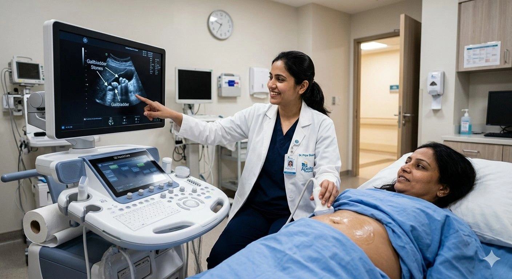

Gallstones are one of the most common abdominal conditions seen in clinical practice across India — and abdominal ultrasound is the investigation that diagnoses them with unmatched speed, safety, and accuracy. If you have been experiencing the symptoms of gallstones in the stomach — upper abdominal pain, nausea, bloating, or intolerance to fatty foods — your doctor will almost certainly refer you for an ultrasound examination before any other investigation. This guide explains in full detail how ultrasound for gallbladder stones accuracy is achieved, what the scan looks for beyond stones alone including gallbladder wall thickening ultrasound findings, how preparation for gallbladder ultrasound fasting affects your result, what gallbladder stone size for surgery criteria look like, the abdominal ultrasound cost in Madurai, and why Meera 4D Scans is the best diagnostic centre in Madurai for abdominal scans. Contact us today to confirm the current abdominal ultrasound cost in Madurai and book your appointment.
Why Ultrasound Is the Gold Standard for Gallbladder Stone Detection
When a patient presents with symptoms of gallstones in the stomach, the clinical pathway invariably begins with ultrasound. No other imaging modality matches the combination of accuracy, safety, real-time capability, and cost that abdominal ultrasound delivers for gallbladder assessment. Understanding why ultrasound for gallbladder stones accuracy is so high — and why it outperforms CT, MRI, and plain X-ray for this specific indication — helps patients appreciate what the examination is measuring and why the result is so clinically reliable.
Ultrasound for Gallbladder Stones Accuracy: The Clinical Evidence
The ultrasound for gallbladder stones accuracy is consistently reported at 95–99% sensitivity for stones larger than 2 mm in clinical studies — making it the most reliable single test for this diagnosis. This performance is achieved because gallstones possess two specific properties that ultrasound detects with exceptional clarity:
- Strong acoustic shadow — gallstones reflect the ultrasound beam back toward the probe (producing a bright echogenic focus on screen) and block transmission beyond them (producing a dark acoustic shadow below). This combination — bright stone plus posterior shadow — is the hallmark finding that makes ultrasound for gallbladder stones accuracy so high, as it is almost impossible to replicate with benign artefact
- Gravitational mobility — gallstones move under gravity when the patient changes position. When a sonologist asks the patient to roll onto their side and a bright echogenic focus with acoustic shadow shifts position within the gallbladder lumen, this confirms a mobile stone with near-certainty. This mobility test is a core part of the ultrasound for gallbladder stones accuracy protocol at the best diagnostic centre in Madurai for abdominal scans
- No radiation exposure — unlike CT scanning, which exposes the patient to ionising radiation, ultrasound for gallbladder stones accuracy is achieved with completely safe sound waves. This makes ultrasound the appropriate first-line investigation for all patient groups including pregnant women, children, and patients requiring repeat assessment
- Real-time dynamic assessment — the ability to assess the gallbladder wall in real-time, evaluate the bile ducts, and perform the mobility test in a single appointment places abdominal ultrasound ahead of CT and MRI for initial gallstone investigation. The best diagnostic centre in Madurai for abdominal scans uses this real-time capability to assess beyond stone presence alone
- Simultaneous multi-organ assessment — a complete abdominal ultrasound evaluates not just the gallbladder but also the liver, bile ducts, pancreas, spleen, and kidneys in the same appointment. Patients presenting with symptoms of gallstones in the stomach may have concurrent hepatic pathology, bile duct dilation, or pancreatic changes that the best diagnostic centre in Madurai for abdominal scans identifies in a single all-inclusive examination
At Meera 4D Scans — the best diagnostic centre in Madurai for abdominal scans — every gallbladder ultrasound is a complete abdominal assessment reported by an experienced on-site sonologist. The abdominal ultrasound cost in Madurai at our centre is all-inclusive with no separate report charges. Contact our team for current pricing and same-day appointment availability.
Symptoms of Gallstones in the Stomach: When to Get an Ultrasound
Recognising the symptoms of gallstones in the stomach is the first step toward diagnosis. Gallstones affect an estimated 10–15% of adults globally, and the majority remain silent — causing no symptoms at all. However, when a stone obstructs the cystic duct or causes gallbladder inflammation, the symptoms of gallstones in the stomach can be severe and require urgent investigation. Knowing which symptoms warrant an abdominal ultrasound examination at the best diagnostic centre in Madurai for abdominal scans helps patients act at the right time rather than delaying diagnosis.
Symptoms of Gallstones in the Stomach: Clinical Presentation Guide
| Symptom | Clinical Description | Urgency for Ultrasound |
|---|---|---|
| Biliary colic | Sudden, severe cramping pain in the right upper quadrant or epigastric region — the classic presenting symptom of gallstones in the stomach. Pain typically begins 30–60 minutes after a fatty meal and may last 1–5 hours before resolving spontaneously | Within 48–72 hours; sooner if pain is severe or recurrent |
| Right shoulder or back radiation | Pain radiating to the right shoulder tip or between the shoulder blades — a characteristic pattern of referred pain from gallbladder distension, part of the constellation of symptoms of gallstones in the stomach | Within 48–72 hours |
| Nausea and vomiting | Accompanying nausea and vomiting during a biliary colic attack, often without relief of the pain — a consistent symptom of gallstones in the stomach during acute episodes | Within 48–72 hours |
| Fatty food intolerance | Consistent bloating, nausea, or upper abdominal discomfort triggered specifically by fatty or fried foods — one of the most common chronic symptoms of gallstones in the stomach in patients with recurrent stones | Elective within 1–2 weeks |
| Fever with right upper quadrant pain | Fever combined with right upper abdominal pain and tenderness suggests acute cholecystitis — a complication of gallstones requiring urgent assessment. This combination of symptoms of gallstones in the stomach should not be managed with outpatient deferral | Urgent — same day |
| Jaundice | Yellowing of the skin and eyes occurring alongside symptoms of gallstones in the stomach suggests common bile duct obstruction by a stone — a complication requiring urgent clinical review and abdominal ultrasound to assess the bile duct diameter | Urgent — same day |
| Silent gallstones (incidental finding) | Many patients have gallstones discovered incidentally on an abdominal ultrasound performed for unrelated reasons. These patients have no symptoms of gallstones in the stomach and are managed conservatively with surveillance in most cases | Outpatient follow-up as advised by treating doctor |

Preparation for Gallbladder Ultrasound Fasting: Why It Is Non-Negotiable
Of all the steps a patient can take to ensure an accurate gallbladder ultrasound, preparation for gallbladder ultrasound fasting is the most critical — and the most frequently overlooked. Arriving for your scan without completing the required preparation for gallbladder ultrasound fasting is the single most common cause of a suboptimal or inconclusive result, and is the most frequent reason patients need to repeat an abdominal ultrasound at additional cost. Understanding why preparation for gallbladder ultrasound fasting is required — not just what to do — helps patients follow the instructions correctly.
Why Preparation for Gallbladder Ultrasound Fasting Affects Accuracy
The gallbladder is a storage organ that fills with bile between meals. When food is consumed — particularly fat — the gallbladder contracts powerfully to release bile into the small intestine to aid digestion. After contraction, the gallbladder is small, thick-walled, and partially collapsed, making accurate stone detection significantly more difficult. When the patient fasts correctly before their scan, the gallbladder fills to its maximum size with bile, creating a large, clearly distended organ in which even small stones are clearly visible as echogenic foci with acoustic shadows. This physiological state is the foundation of ultrasound for gallbladder stones accuracy, and it only occurs when preparation for gallbladder ultrasound fasting is followed correctly.
Preparation for Gallbladder Ultrasound Fasting: The Complete Protocol
- Fast for a minimum of 6–8 hours before your abdominal ultrasound appointment. This is the core of preparation for gallbladder ultrasound fasting and cannot be shortened. A 4-hour fast produces a gallbladder that is not fully distended; a 6–8-hour fast consistently produces optimal gallbladder filling
- No food of any kind during the fast — this includes solid food, liquid meals, milk, dairy products, and fruit juice. Even a small amount of fat triggers gallbladder contraction. The preparation for gallbladder ultrasound fasting protocol at Meera 4D Scans — the best diagnostic centre in Madurai for abdominal scans — is strict on this point without exception
- Plain water is permitted — small amounts of plain water may be consumed during the fast without affecting gallbladder filling. However, caffeinated drinks, carbonated drinks, and fruit juices are not permitted as part of the preparation for gallbladder ultrasound fasting protocol, as these stimulate gastrointestinal motility or trigger partial gallbladder contraction
- Morning appointments are ideal — scheduling your abdominal ultrasound as a morning appointment makes preparation for gallbladder ultrasound fasting easy to achieve by simply fasting overnight. Afternoon appointments require a conscious decision to skip breakfast and lunch, which patients find harder to maintain consistently
- Diabetic patients should inform the team at booking — patients with insulin-dependent or tablet-controlled diabetes have specific needs around fasting and medication timing. The team at the best diagnostic centre in Madurai for abdominal scans will provide tailored preparation for gallbladder ultrasound fasting advice when you book your appointment
- Continue regular medications with a small sip of water — unless specifically instructed otherwise by your treating doctor, regular medications should be taken as scheduled during the preparation for gallbladder ultrasound fasting period, using the minimum amount of plain water necessary
Correct preparation for gallbladder ultrasound fasting is the single most important step the patient controls in achieving accurate ultrasound for gallbladder stones accuracy. At Meera 4D Scans — the best diagnostic centre in Madurai for abdominal scans — our team confirms preparation instructions with every patient at the time of booking. Contact us today to book and receive your personalised preparation guide.
What Gallbladder Ultrasound Shows Beyond Stones: Wall Thickening, Polyps, and Bile Duct Assessment
A thorough gallbladder ultrasound at the best diagnostic centre in Madurai for abdominal scans is not a simple yes-or-no test for stone presence. The sonologist systematically evaluates multiple aspects of gallbladder anatomy and pathology, of which stone detection is only one component. Understanding the full scope of what abdominal ultrasound assesses in the gallbladder — including gallbladder wall thickening ultrasound findings — helps patients understand the clinical value of a detailed specialist report.
Gallbladder Wall Thickening Ultrasound: What It Means Clinically
The normal gallbladder wall on ultrasound measures 3 mm or less in a fasted patient. Gallbladder wall thickening ultrasound — defined as a wall measurement exceeding 3–4 mm — is a significant finding with a wide differential diagnosis that requires careful clinical correlation. The gallbladder wall thickening ultrasound findings encountered in clinical practice fall into two broad categories: local gallbladder pathology and systemic conditions that cause wall oedema.
| Gallbladder Wall Thickening Ultrasound Finding | Likely Cause | Additional Ultrasound Features |
|---|---|---|
| Diffuse smooth wall thickening >4 mm with stones and pericholecystic fluid | Acute cholecystitis — the most clinically significant gallbladder wall thickening ultrasound finding in a patient with symptoms of gallstones in the stomach and fever | Positive sonographic Murphy's sign; distended gallbladder; stones or sludge present |
| Diffuse smooth wall thickening without stones or fever | Systemic cause — liver disease (cirrhosis, hepatitis), cardiac failure, hypoalbuminaemia, or renal failure; gallbladder wall thickening ultrasound from systemic oedema | Concurrent liver, spleen, or ascites findings often present; no gallstones; no pericholecystic fluid |
| Focal wall thickening with irregular mucosa | Gallbladder carcinoma — one of the most important gallbladder wall thickening ultrasound findings requiring urgent oncological referral | Irregular mass lesion, invasion of adjacent liver, lymph nodes; Doppler flow within thickened wall |
| Diffuse symmetric wall thickening with intramural cysts (Rokitansky-Aschoff sinuses) | Adenomyomatosis — a benign gallbladder wall thickening ultrasound finding characterised by intramural diverticula | Comet-tail artefacts within wall; typically a localised fundal or diffuse pattern; no malignant features |
| Chronic wall thickening with contracted gallbladder | Chronic cholecystitis — long-standing gallstone disease causing progressive gallbladder wall thickening ultrasound changes with fibrosis and a shrunken, non-distending gallbladder | Multiple stones often impacted; gallbladder does not distend even after fasting; wall calcification in advanced cases |
What a Complete Gallbladder Ultrasound Assesses
- Stone detection and characterisation — number, size, location, and mobility of stones; biliary sludge and microlithiasis. This is the primary measure of ultrasound for gallbladder stones accuracy and is assessed at every appointment at the best diagnostic centre in Madurai for abdominal scans
- Gallbladder wall measurement — precise gallbladder wall thickening ultrasound assessment with measurement in millimetres and characterisation of the thickening pattern (diffuse, focal, irregular, smooth)
- Gallbladder polyp detection — polyps appear as non-mobile echogenic foci attached to the gallbladder wall without acoustic shadow. Polyps larger than 1 cm require surveillance for malignant potential
- Common bile duct diameter — a dilated common bile duct (normally less than 6–7 mm) suggests downstream obstruction by a stone, stricture, or pancreatic pathology. This is assessed as part of every complete abdominal ultrasound at Meera 4D Scans
- Pericholecystic fluid — fluid around the gallbladder is a key finding in acute cholecystitis and is assessed alongside the gallbladder wall thickening ultrasound measurement and clinical symptoms
- Liver, pancreas, and spleen assessment — the complete abdominal ultrasound at the best diagnostic centre in Madurai for abdominal scans evaluates all major upper abdominal organs in a single examination, providing a comprehensive clinical picture for the treating physician
Gallbladder Stone Size for Surgery: What the Ultrasound Measurement Means
One of the most frequent questions patients ask after a positive gallstone diagnosis is whether surgery is required based on the size of their stones. The relationship between gallbladder stone size for surgery and clinical decision-making is more nuanced than a single measurement threshold, but the ultrasound report's stone size measurement is central to the surgical consultation. Understanding what gallbladder stone size for surgery criteria mean — and what other factors the surgeon considers alongside the ultrasound findings — helps patients approach their surgical referral with accurate expectations.
Gallbladder Stone Size for Surgery: A Clinical Reference Guide
| Stone Size (Ultrasound Measurement) | Clinical Significance | Typical Management Approach |
|---|---|---|
| Less than 5 mm (Microlithiasis) | Very small stones — may pass spontaneously or cause biliary colic. Not typically a primary criterion for gallbladder stone size for surgery in asymptomatic patients | Conservative management; surveillance ultrasound; surgery if symptomatic or complications develop |
| 5 mm – 10 mm | Small stones; may remain asymptomatic or cause recurrent biliary colic. Symptomatic status is a stronger surgical indicator than gallbladder stone size for surgery at this range | Surgery if symptomatic; conservative if incidental finding with no symptoms of gallstones in the stomach |
| 10 mm – 20 mm | Medium stones; commonly symptomatic. The gallbladder stone size for surgery consideration strengthens significantly in this range when accompanied by symptoms of gallstones in the stomach, acute cholecystitis, or gallbladder wall thickening ultrasound changes | Surgery typically recommended for symptomatic patients; surveillance acceptable in asymptomatic cases |
| 20 mm – 30 mm | Large stones; higher risk of complications including Mirizzi syndrome and gallstone ileus. At this gallbladder stone size for surgery range, surgical referral is generally recommended even in partially symptomatic patients | Surgery strongly recommended; risk of complications increases with stone size |
| Greater than 30 mm | Very large stones; the gallbladder stone size for surgery at this range carries elevated risk of gallbladder carcinoma association in long-standing cases. Surgical referral is routinely recommended | Surgical referral standard; additional imaging may be required to exclude malignant change in the gallbladder wall thickening ultrasound assessment |
It is essential to understand that gallbladder stone size for surgery is one input into the surgical decision — not a standalone criterion. A surgeon will consider stone size alongside: symptom frequency and severity, presence or absence of acute cholecystitis, gallbladder wall thickening ultrasound findings, bile duct involvement, the patient's overall health, and their personal preference. The ultrasound report from the best diagnostic centre in Madurai for abdominal scans provides the surgeon with the precise measurements and complete gallbladder assessment needed to make this decision accurately.
Abdominal Ultrasound Cost in Madurai: What Is Included at Meera 4D Scans
The abdominal ultrasound cost in Madurai at Meera 4D Scans is transparently structured. Every patient receives a complete examination with no hidden charges added at billing. The quoted abdominal ultrasound cost in Madurai covers all of the following:
Abdominal Ultrasound Cost All-Inclusive at Meera 4D Scans
- Complete upper abdominal ultrasound examination — systematic assessment of the liver, gallbladder, bile ducts, pancreas, spleen, kidneys, and aorta included within the standard abdominal ultrasound cost in Madurai at Meera 4D Scans
- Gallstone detection and measurement — high-accuracy ultrasound for gallbladder stones accuracy with number, size, location, and mobility assessment included in the abdominal ultrasound cost in Madurai
- Gallbladder wall thickening ultrasound assessment — precise wall measurement and characterisation of any thickening pattern included in the standard abdominal ultrasound cost in Madurai with no additional charge for complex findings
- Bile duct diameter measurement — common bile duct assessment for dilatation suggesting stone or obstruction, included as part of the complete abdominal ultrasound cost in Madurai
- Gallbladder stone size for surgery measurement — precise stone dimensions documented in the specialist report, providing the treating surgeon with accurate gallbladder stone size for surgery data
- Detailed same-day specialist report — written report documenting all findings with clinical impression and measurements, ready for your treating doctor, included in the abdominal ultrasound cost in Madurai with no separate report fee
- Digital images provided — scan images delivered alongside the written report at no additional charge beyond the quoted abdominal ultrasound cost in Madurai
Abdominal Ultrasound Cost in Madurai: What Drives Price Variation
| Cost Factor | Impact on Abdominal Ultrasound Cost in Madurai |
|---|---|
| Scope of examination | Centres quoting a very low abdominal ultrasound cost in Madurai may perform a limited single-organ scan (gallbladder only). A complete upper abdominal assessment covering liver, bile ducts, pancreas, spleen, and kidneys — which is the standard at the best diagnostic centre in Madurai for abdominal scans — is the appropriate comparison |
| Equipment resolution | High-resolution ultrasound equipment directly improves ultrasound for gallbladder stones accuracy and gallbladder wall thickening ultrasound measurement precision. Entry-level machines may miss small stones or misjudge wall thickness — a clinical risk not visible from the quoted abdominal ultrasound cost in Madurai alone |
| Report included vs charged separately | At Meera 4D Scans, the specialist report is included in the abdominal ultrasound cost in Madurai. At centres where the report is charged additionally, the headline scan price understates the true cost |
| Hospital vs standalone diagnostic centre | Hospital-attached radiology departments apply institutional overhead to the abdominal ultrasound cost in Madurai, often pricing 40–80% above standalone centres offering equivalent clinical quality. Meera 4D Scans — the best diagnostic centre in Madurai for abdominal scans — delivers hospital-grade imaging at standalone centre pricing |
To confirm the current all-inclusive abdominal ultrasound cost in Madurai at Meera 4D Scans, contact our team directly. We will confirm what is included, same-day reporting arrangements, and the total abdominal ultrasound cost in Madurai with no hidden additions.
Choosing the Best Diagnostic Centre in Madurai for Abdominal Scans: What to Look For
When selecting the best diagnostic centre in Madurai for abdominal scans, the criteria that determine whether you receive an accurate, clinically useful result go beyond price and proximity. These are the questions every patient should ask before booking an abdominal ultrasound for gallstone assessment.
How to Evaluate a Diagnostic Centre for Abdominal Ultrasound
Confirm High-Resolution Ultrasound Equipment
The ultrasound for gallbladder stones accuracy that clinical studies report — 95–99% sensitivity — is achieved on modern high-resolution systems. Ask whether the best diagnostic centre in Madurai for abdominal scans you are considering uses dedicated abdominal ultrasound equipment, not a general portable machine. Small stones and subtle gallbladder wall thickening ultrasound changes are the findings most likely to be missed on low-resolution equipment.
Confirm Complete Abdominal Assessment, Not Gallbladder Only
A patient presenting with symptoms of gallstones in the stomach may have concurrent hepatic, biliary, or pancreatic pathology. Confirm that the abdominal ultrasound cost in Madurai at your chosen centre covers a complete upper abdominal examination — not a limited single-organ scan — and that bile duct diameter, liver, and pancreas are included in the standard examination.
Confirm In-House Sonologist Reporting
The gallbladder wall thickening ultrasound assessment and gallbladder stone size for surgery measurements in your report are only as useful as the expertise of the sonologist who interprets them. Confirm that the best diagnostic centre in Madurai for abdominal scans you choose has a qualified, on-site sonologist producing the report — not an outsourced remote reporting service with delayed turnaround.
Confirm Preparation Instructions Are Provided at Booking
A centre that does not proactively provide preparation for gallbladder ultrasound fasting instructions at the time of booking is setting patients up for suboptimal results. The best diagnostic centre in Madurai for abdominal scans should confirm fasting requirements, appointment duration, and what to bring when the booking is made — not when the patient arrives.
Confirm All-Inclusive Abdominal Ultrasound Cost in Madurai
Ask explicitly whether the quoted abdominal ultrasound cost in Madurai includes the specialist report, digital images, and all components of the examination — or whether these are charged separately. Only all-inclusive figures are valid for comparison when evaluating the best diagnostic centre in Madurai for abdominal scans on cost.
Why Meera 4D Scans Is the Best Diagnostic Centre in Madurai for Abdominal Scans
Meera 4D Scans is trusted as the best diagnostic centre in Madurai for abdominal scans by patients across the city for gallstone assessment, upper abdominal evaluation, and specialist sonology reporting. Our consistent clinical quality and transparent pricing make us the preferred choice for patients referred for abdominal ultrasound after presenting with symptoms of gallstones in the stomach.
- High-resolution abdominal ultrasound equipment — delivering the highest standard of ultrasound for gallbladder stones accuracy available in Madurai, with precise gallbladder wall thickening ultrasound measurement and small stone detection capability
- Complete upper abdominal assessment — liver, gallbladder, bile ducts, pancreas, spleen, and kidneys evaluated in every appointment. Gallbladder stone size for surgery measurements, gallbladder wall thickening ultrasound findings, and bile duct assessment all documented in a single all-inclusive report
- Proactive preparation guidance — preparation for gallbladder ultrasound fasting instructions provided at the time of booking for every patient, ensuring maximum ultrasound for gallbladder stones accuracy on the day of the examination
- Experienced on-site sonologists — qualified specialists interpreting every abdominal ultrasound in-house, with same-day detailed written reports covering all findings including gallbladder wall thickening ultrasound patterns, polyps, and bile duct dimensions
- Transparent, all-inclusive abdominal ultrasound cost in Madurai — the price quoted at booking covers the complete examination, specialist report, and digital images. No hidden charges at billing
- Same-day results — reports sent digitally to WhatsApp or email the same day, ready for your surgeon or physician at your follow-up consultation
- Trusted by 10,000+ patients in Madurai for abdominal scans, pregnancy scans, neurology, cardiology, and women's health diagnostics across all stages of life
For the current abdominal ultrasound cost in Madurai, to confirm preparation for gallbladder ultrasound fasting requirements, or to book your appointment at the best diagnostic centre in Madurai for abdominal scans, contact Meera 4D Scans today or call +91-9042883031. Same-day appointments are available subject to schedule.
Frequently Asked Questions
How accurate is ultrasound for gallbladder stones detection?
Ultrasound for gallbladder stones accuracy is among the highest of any diagnostic test — 95–99% sensitivity for stones larger than 2 mm. It is the first-line gold-standard investigation recommended before CT or MRI. At Meera 4D Scans — the best diagnostic centre in Madurai for abdominal scans — high-resolution equipment and experienced sonologists maximise ultrasound for gallbladder stones accuracy in every examination.
What are the symptoms of gallstones in the stomach?
The classic symptoms of gallstones in the stomach include sudden right upper quadrant or epigastric pain (biliary colic) often triggered by fatty foods, pain radiating to the right shoulder or back, nausea, vomiting, and bloating. Fever with pain suggests acute cholecystitis. Jaundice alongside symptoms of gallstones in the stomach suggests bile duct obstruction — both require urgent assessment.
How long should I fast before a gallbladder ultrasound?
Preparation for gallbladder ultrasound fasting requires a minimum 6–8-hour fast before your appointment. No food, milk, juice, or caffeinated drinks during this period — plain water in small amounts is permitted. Correct preparation for gallbladder ultrasound fasting is the single most important patient-controlled step for achieving accurate ultrasound for gallbladder stones accuracy. Morning appointments at Meera 4D Scans make fasting straightforward.
What does gallbladder wall thickening on ultrasound indicate?
Gallbladder wall thickening ultrasound — a wall measuring more than 3–4 mm — can indicate acute cholecystitis, chronic cholecystitis, adenomyomatosis, polyps, gallbladder carcinoma, or systemic conditions such as liver disease or heart failure. Gallbladder wall thickening ultrasound findings are always correlated with symptoms and clinical history in the specialist report at Meera 4D Scans.
What gallbladder stone size requires surgery?
Gallbladder stone size for surgery is not determined by measurement alone — symptom frequency, complication history, and gallbladder wall thickening ultrasound findings are also weighed. As a general guide: stones above 2–3 cm carry higher complication risk and are more frequently recommended for surgery. Asymptomatic stones smaller than 5 mm are often managed conservatively. Your surgeon uses the precise gallbladder stone size for surgery measurement in the Meera 4D Scans report alongside your full clinical picture.
What is the abdominal ultrasound cost in Madurai?
The abdominal ultrasound cost in Madurai at Meera 4D Scans is all-inclusive — covering the complete upper abdominal examination, specialist report, and digital images with no hidden additions. Contact us at +91-9042883031 for the current abdominal ultrasound cost in Madurai and to confirm same-day appointment availability at the best diagnostic centre in Madurai for abdominal scans.
Can ultrasound detect gallbladder cancer?
Yes. Abdominal ultrasound is the initial investigation for gallbladder wall thickening ultrasound changes that may indicate carcinoma — particularly focal irregular wall thickening, mass lesions, or invasion of adjacent structures. The ultrasound for gallbladder stones accuracy protocol at the best diagnostic centre in Madurai for abdominal scans includes assessment for malignant features in every examination. Further imaging (CT or MRI) may be recommended if suspicious findings are identified.
Useful Resources
Trusted clinical and patient references for gallbladder disease, abdominal ultrasound standards, and surgical guidelines relevant to patients in Tamil Nadu and Madurai.
-
ISUOG Practice Guidelines: Abdominal Ultrasound International Society of Ultrasound in Obstetrics and Gynaecology guidelines covering abdominal ultrasound technique, image quality standards, and systematic assessment protocols for upper abdominal organs.
-
NCBI — Cholelithiasis (Gallstones): Clinical Review Peer-reviewed clinical reference on gallstone diagnosis, the accuracy of ultrasound for gallbladder stones detection, symptoms of gallstones, management criteria including gallbladder stone size for surgery, and complications.
-
WHO — Digestive Diseases and Abdominal Health World Health Organization reference covering the global burden of digestive and gallbladder diseases, prevention, and the role of diagnostic imaging in managing abdominal conditions.
-
Indian Radiological & Imaging Association (IRIA) The national professional body for radiologists and sonologists in India — a reference for the qualifications and quality standards that apply to abdominal ultrasound practitioners at the best diagnostic centres in Madurai and across Tamil Nadu.
-
National Health Portal India — Diagnostic Imaging Official Indian government patient guidance on abdominal diagnostic imaging, ultrasound examination preparation, and standards applicable to diagnostic centres in Tamil Nadu.